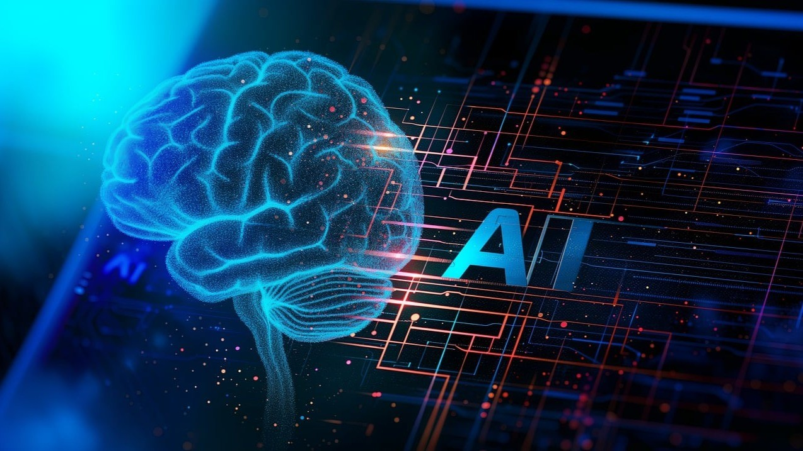
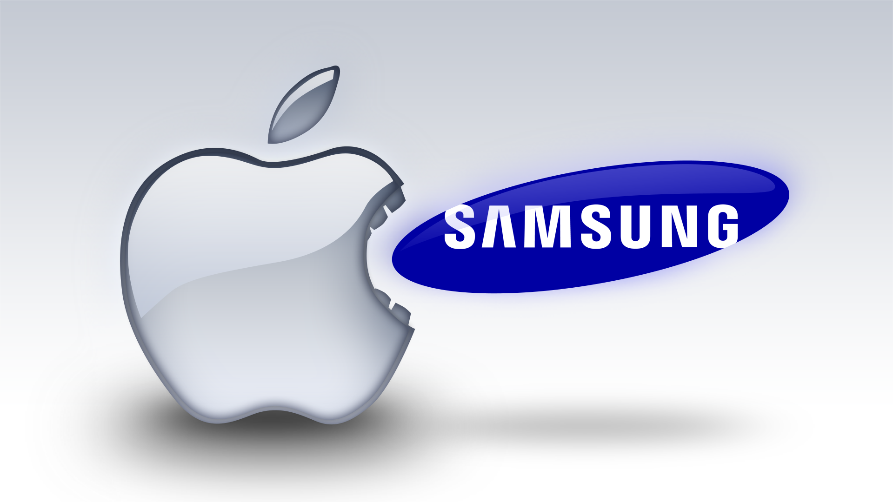
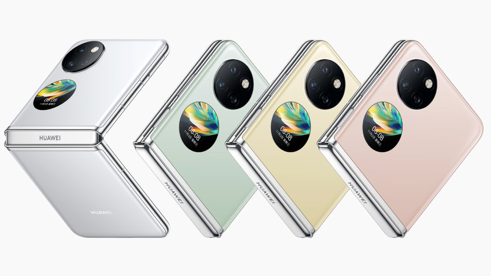

Üdvözöl a Tech Blog!
Friss hírek, eszköztesztek és érdekességek a technológia világából.

AI a mindennapokban
Az AI egyre több helyen segíti az életünket – nézd meg, hogyan változik a világ körülöttünk!
A mesterséges intelligencia fejlődése új korszakot nyitott meg az ipar és a szolgáltatások világában. Nemcsak az automatizációt segíti, hanem teljesen új üzleti modelleket tesz lehetővé. Gondoljunk csak az önvezető autókra, amelyek komplex AI rendszerekre támaszkodnak a biztonságos közlekedés érdekében. A mesterséges intelligencia az egészségügyben is forradalmi megoldásokat hozott: képes gyorsan és pontosan diagnosztizálni bizonyos betegségeket, így felgyorsítva a kezeléseket.

Ezen kívül az AI szerepe egyre fontosabb a kreatív iparágakban is. Képes művészeti alkotásokat létrehozni, zenét komponálni, sőt, akár cikkeket írni – hasonlóan ahhoz, ahogyan ez a blogposzt is készült. Ugyanakkor fontos társadalmi kérdéseket is felvet: vajon mi lesz a munkahelyekkel, ha bizonyos feladatokat gépek végeznek el helyettünk? Milyen etikai és jogi keretek szükségesek ahhoz, hogy felelősségteljesen használjuk az AI-t? Ezek a kérdések mindennapi vitáink részévé váltak, és a következő években biztosan még hangsúlyosabbak lesznek.
Legújabb okostelefonok
A legújabb okostelefonok idén is lenyűgöző technológiai újításokat hoztak. A hajlítható kijelzők egyre elérhetőbbé váltak, a kamerák mesterséges intelligenciával optimalizálják a képeket, és a processzorok sebessége minden eddiginél nagyobb teljesítményt nyújt. Ebben az összehasonlító elemzésben megnézzük, hogyan teljesít a Samsung, az Apple és más nagy gyártók új generációs készülékei, mire képesek az akkumulátorok, és milyen újdonságokat érdemes figyelembe venni vásárlás előtt.
Az okosotthon eszközök palettája évről évre bővül: ma már nemcsak a világítást és a fűtést vezérelhetjük távolról, hanem a redőnyöket, a biztonsági kamerákat, sőt, még a konyhai eszközöket is. Az intelligens termosztátok például képesek tanulni a lakók szokásait, és optimalizálni a fűtést, így csökkentve az energiafogyasztást. A hangvezérelt asszisztensek, mint az Alexa vagy a Google Assistant, egyre több nyelven és platformon érhetők el, ezáltal még kényelmesebbé teszik az irányítást.
Ugyanakkor nem szabad megfeledkezni a biztonsági kockázatokról sem: minden internetre csatlakozó eszköz potenciális támadási felület lehet. Ezért kiemelten fontos, hogy naprakészen tartsuk az eszközök szoftverét, és erős jelszavakat használjunk. A jövőben az okosotthonok várhatóan még integráltabb rendszerekké válnak, ahol a különböző eszközök nemcsak egymással, hanem a környező infrastruktúrával is kommunikálnak, például az energiahálózattal vagy a közlekedési rendszerekkel.

Okosotthon megoldások
Megmutatjuk, hogyan lehet egy lakásból modern, kényelmes és energiatakarékos otthont varázsolni.
Az okosotthon eszközök palettája évről évre bővül: ma már nemcsak a világítást és a fűtést vezérelhetjük távolról, hanem a redőnyöket, a biztonsági kamerákat, sőt, még a konyhai eszközöket is. Az intelligens termosztátok például képesek tanulni a lakók szokásait, és optimalizálni a fűtést, így csökkentve az energiafogyasztást. A hangvezérelt asszisztensek, mint az Alexa vagy a Google Assistant, egyre több nyelven és platformon érhetők el, ezáltal még kényelmesebbé teszik az irányítást.

Ugyanakkor nem szabad megfeledkezni a biztonsági kockázatokról sem: minden internetre csatlakozó eszköz potenciális támadási felület lehet. Ezért kiemelten fontos, hogy naprakészen tartsuk az eszközök szoftverét, és erős jelszavakat használjunk. A jövőben az okosotthonok várhatóan még integráltabb rendszerekké válnak, ahol a különböző eszközök nemcsak egymással, hanem a környező infrastruktúrával is kommunikálnak, például az energiahálózattal vagy a közlekedési rendszerekkel.